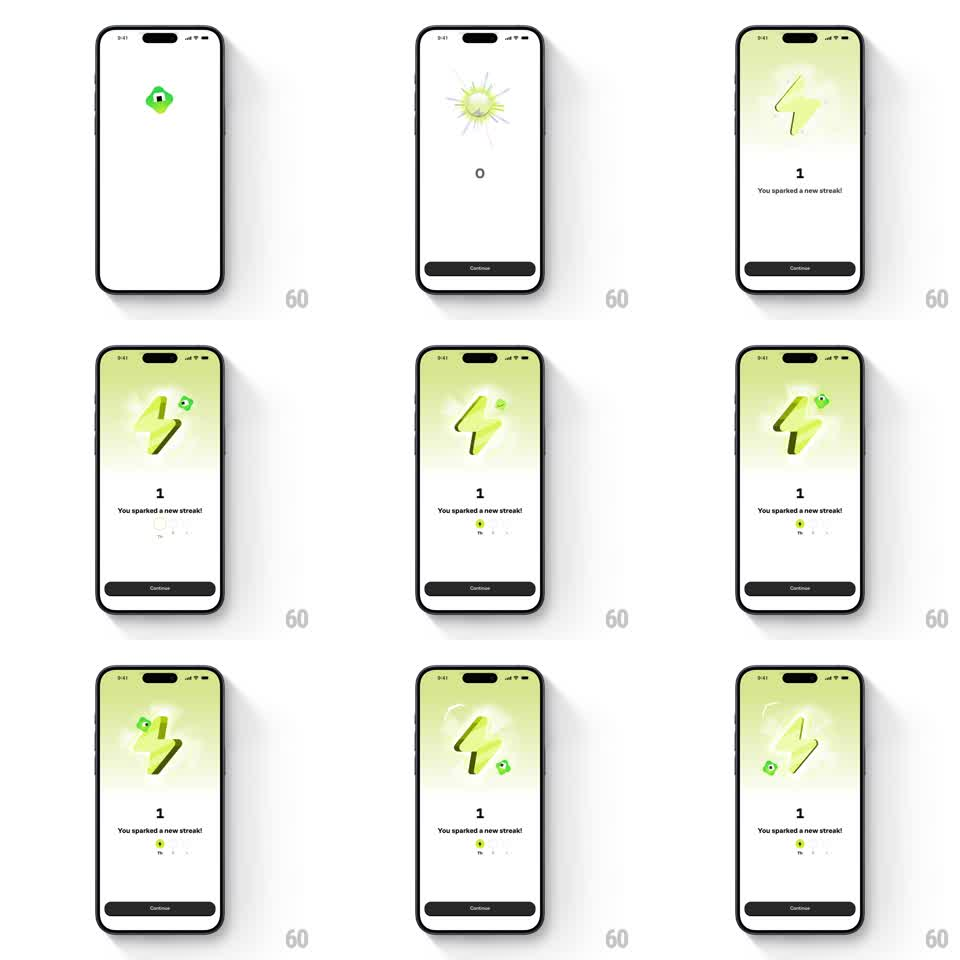

Media
Frame-by-frame

Rebuild this animation 1:1: Brilliant's streak-activation moment - the Koji mascot triggers a radial burst that reveals a glowing 3D lightning bolt, the counter flips 0 to 1 with "You sparked a new streak!", and Koji playfully orbits the bolt with sparkles while the week row fills in.

Rebuild this animation 1:1: Brilliant's streak-activation moment - the Koji mascot triggers a radial burst that reveals a glowing 3D lightning bolt, the counter flips 0 to 1 with "You sparked a new streak!", and Koji playfully orbits the bolt with sparkles while the week row fills in. ## Integration Integration: stack-agnostic spec - springs given as stiffness/damping, timed motions as duration + curve; map every value to your framework and animation library of choice. ## Scene White screen, black Continue button pinned bottom. Center stage: a soft lime radial glow behind a glossy 3D lightning bolt. Above/beside it, the small green blob mascot Koji. Below: a large streak count, the line "You sparked a new streak!", and a week strip (M T W T F S S) with today's cell lit lime. ## Motion spec Pattern: reward burst + mascot orbit, ~2.5s. - Burst: Koji pops (scale 0.5 -> 1, spring ~400/15) and detonates a radial particle burst (thin lime rays, 300ms, ease-out) that leaves the soft glow. - Bolt reveal: the 3D bolt scales in (spring ~300/14) with a slight overshoot and a slow idle float (6px, 2.5s). - Count flip: "0" rolls to "1" (odometer-style, 300ms) as the headline fades up (200ms). - Orbit: Koji circles the bolt (one lazy lap, ~2s, elliptical path) trailing two sparkle pops, then parks at the bolt's upper right with a happy bounce (spring ~350/14). - Week row: today's cell fills lime (scale 0.6 -> 1, spring ~420/18); remaining days stay outline. ## Calibration - The burst is one-shot; only the bolt's float and Koji's idle bob loop. - Keep particles sparse (8-12 rays) - a dense burst reads as confetti. ## Reduced motion Bolt and copy fade in (250ms); Koji appears parked; no burst or orbit. ## Don't miss - The lime/yellow-green palette is the streak identity - don't swap in orange flame language. - The count and the week strip must agree (both show day 1).